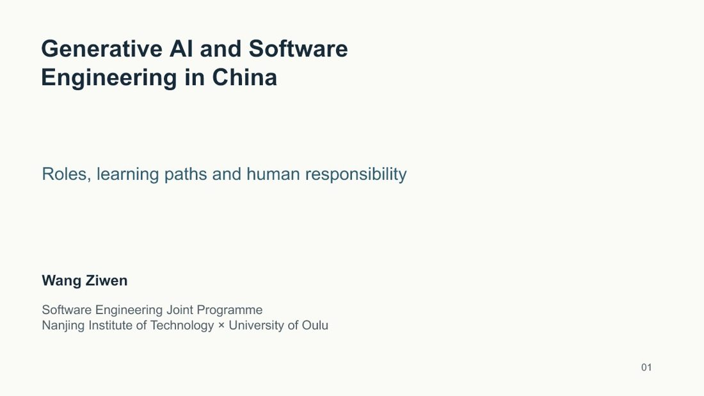
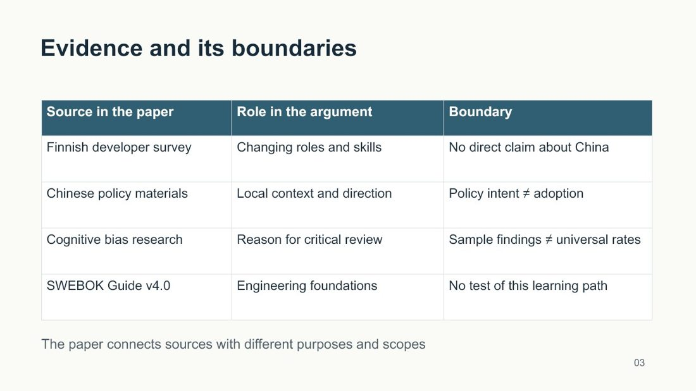
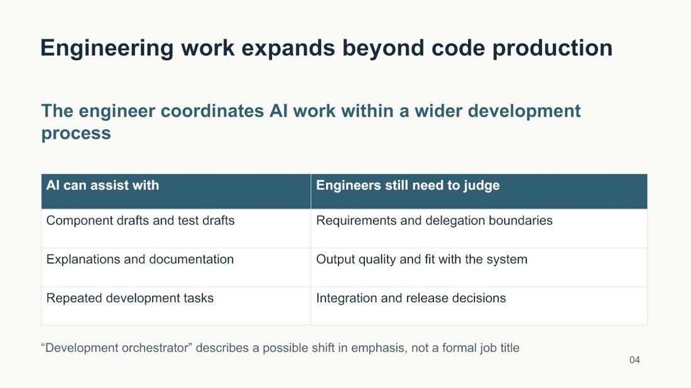
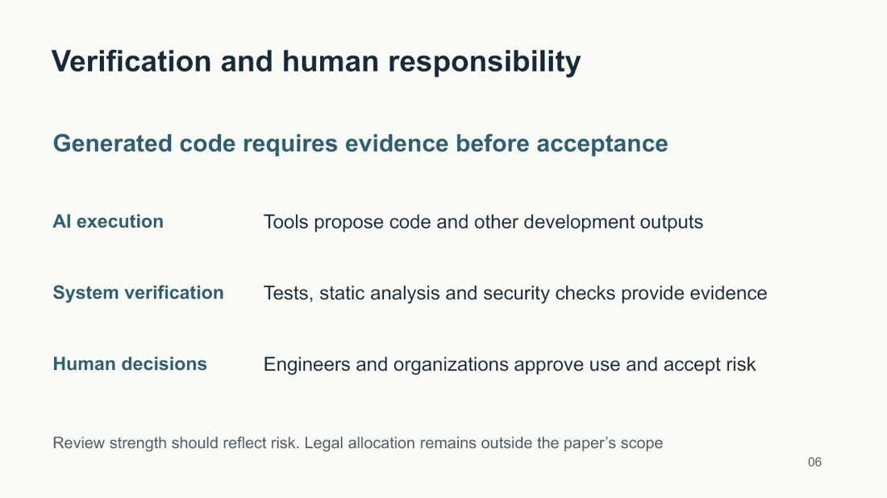

把材料放进来。
论文、表格、方案，都可以。
当前 AI 先理解资料，再组织内容。

不必先学会写提示词。
从你手边的材料开始。
论文、表格、方案，都可以。
当前 AI 先理解资料，再组织内容。
通过有针对性的追问，
一起确定用途、受众与关键取舍。
内容加工、制作、检查。
交付文件，不再转发中间提示词。
这次想完成什么？
根据这份论文，制作一份
用于答辩的 PPT。
把参考资料拖到这里
Word · Excel · PPT · PDF先把思路理清楚
已有信息不重复问。关键取舍，再一起明确。

你的材料，你的 AI。


Skill 把需求、材料和制作流程连接起来。
真正理解与执行的，始终是当前宿主里的 AI。
同一篇论文，同一模型和底层制作工具。两组独立制作，结束后匿名评审。
统一要求：8 页、约 5 分钟、英文页面、逐页中文讲稿、8 组备用答辩问答。
匿名评审认为，使用 Skill 的版本在答辩可用性上小幅胜出。
研究问题与中心论点更集中；来源、论点及推断边界更容易对照；备用问答更针对中国证据不足、因果推断和责任分配等质疑。
视觉方面，表格让关系更清楚，但两份整体都偏保守，没有证明审美效果显著提高。
| 检查项目 | 使用 Skill | 未使用工作台 Skill |
|---|---|---|
| 页数、讲稿与问答 | 全部满足 | 全部满足 |
| 生成与检查耗时 | 5 分 34 秒 | 9 分 31 秒 |
单任务、每组一次。耗时包含工具恢复与返工，不能据此承诺固定提速；5 分钟为讲稿规划，未经口头计时。两组均使用通用 PPT 制作能力，仅实验组使用成品工作台 Skill。本轮未测多轮澄清的收益，也未独立核验论文全部外部参考文献。下载完整实验记录 ↗
Skill 组织工作流程，真正读取材料、判断和制作的，是你正在使用的 AI。
在本地工作台拖入 Word、Excel、PPT 或 PDF，说明想完成什么。最多 5 份，每份 20 MB。
先读材料，再分轮追问。确认用途、受众和关键取舍，已有答案不重复问。
组织内容、核对证据，再制作真实文件。交付前检查需求、格式与可用性。
直接下载文件。中间执行提示留在 AI 工作过程中，不需要你复制转发。
当前版本已在 Codex 桌面端跑通。需要 Node.js 22.13 或更新版本，以及能读写文件、制作成品的宿主。
deliver-workbench 文件夹放入 Codex 的技能目录 ~/.codex/skills/。npm ci，安装本地连接器依赖。codex mcp add delivery_workbench -- <Node绝对路径> <解压目录/bridge/server.mjs绝对路径>使用 $deliver-workbench 打开成品工作台，我要上传材料并直接拿到成品。
本项目不另调模型 API，使用当前 AI 宿主的模型、额度和工具。它不提供免费算力；宿主本身的账户和费用规则仍然适用。
指令可以适配，但完整体验需要宿主支持 stdio MCP、本地文件访问及目标格式制作。目前只验证了 Codex 桌面端，不能保证普通聊天网页或其他宿主直接可用。
需要保持 AI 对话运行。若对话已经结束，回到原聊天说“继续完成工作台任务”；浏览器提交不能保证自动唤醒模型。
可读取 DOCX、XLSX、XLS、PPTX、文字型 PDF、TXT、MD 和 CSV。旧版 DOC/PPT 需转换，扫描 PDF 需先识别文字。成品格式取决于宿主实际具备的工具。